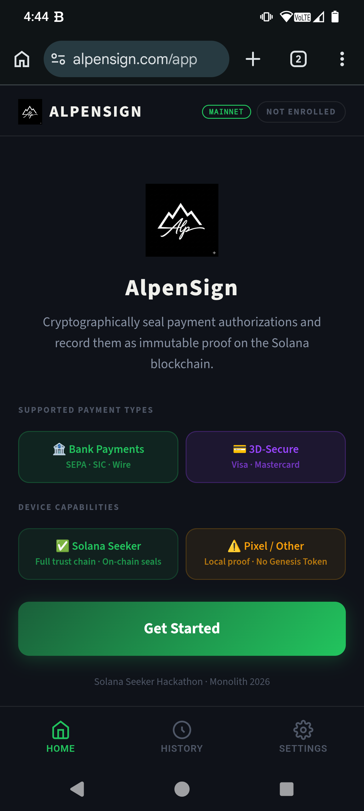
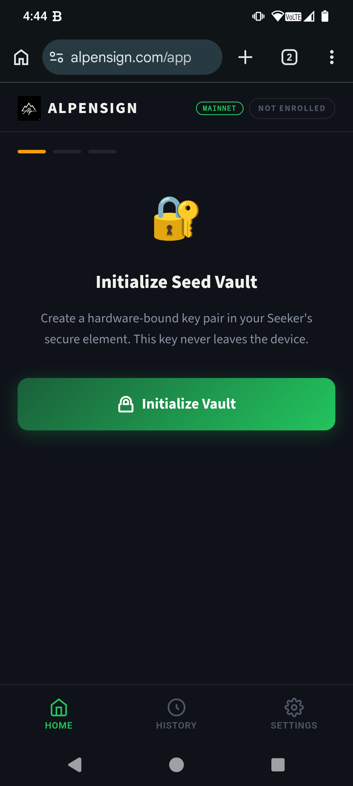
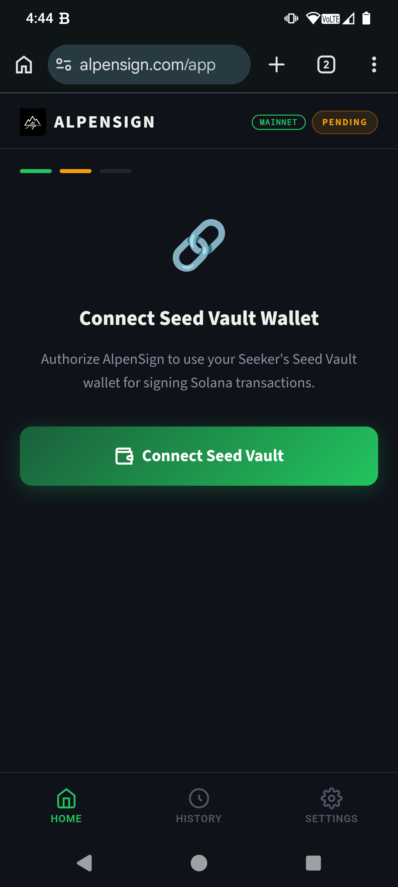
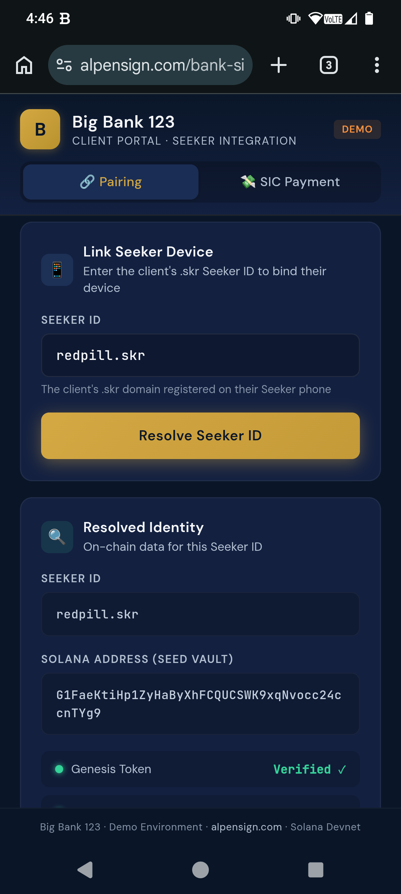
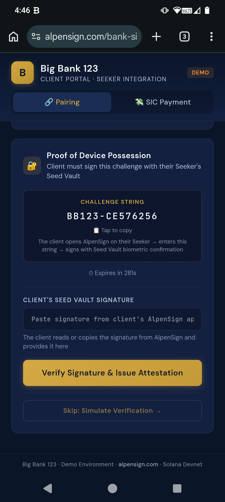
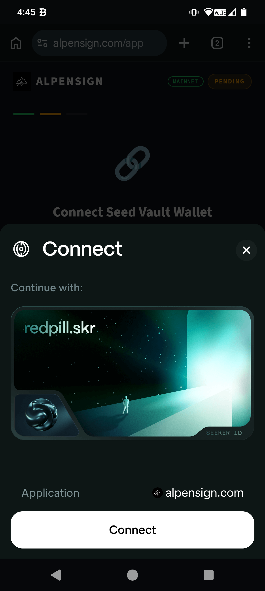
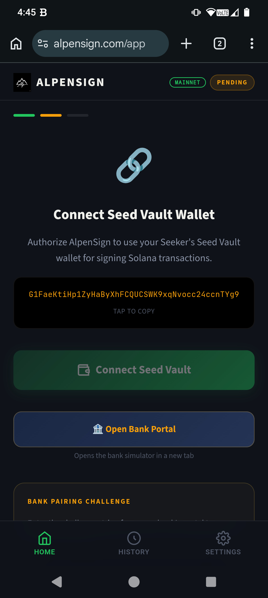
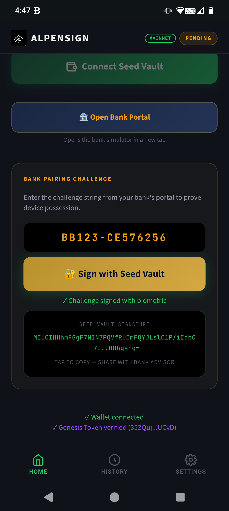
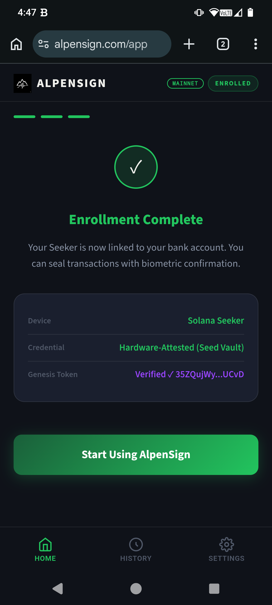
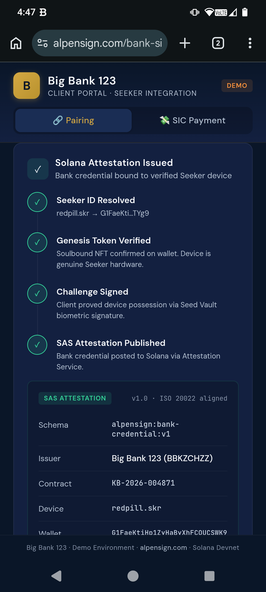

AlpenSign opens on Seeker
The user launches AlpenSign PWA in Chrome on the Solana Seeker phone. The app checks for Genesis Token and Seed Vault availability.

alpensign-01AlpenSign opens on Seeker
The user launches AlpenSign PWA in Chrome on the Solana Seeker phone. The app checks for Genesis Token and Seed Vault availability.
alpensign-01Genesis Token verified
AlpenSign queries the SGT API to confirm a genuine Seeker Genesis Token is present. This is the device identity anchor — soulbound and non-transferable.

alpensign-02Genesis Token verified
AlpenSign queries the SGT API to confirm a genuine Seeker Genesis Token is present. This is the device identity anchor.
alpensign-02Wallet connected via MWA
Mobile Wallet Adapter handshake completes. The Seed Vault wallet address is now bound to the AlpenSign session.

alpensign-03Wallet connected via MWA
Mobile Wallet Adapter handshake completes. The Seed Vault wallet address is now bound to the AlpenSign session.
alpensign-03Signing device linked
The bank simulator receives the device identity via BroadcastChannel. It now shows the connected Seeker wallet and Genesis Token status.

banksim-02Bank issues credential attestation
Using the Solana Attestation Service, the bank binds the customer's signing authority to the specific Seeker wallet + Genesis Token pair.

banksim-03Credential received & stored
AlpenSign confirms the on-chain attestation. The device is now an authorized signing instrument for this bank account.

alpensign-04Credential received & stored
AlpenSign confirms the on-chain attestation. The device is now an authorized signing instrument for this bank account.
alpensign-04Payment queued for approval
A payment order appears in the bank dashboard — awaiting cryptographic seal from the authorized Seeker device before it can be submitted.
 banksim-04
banksim-04
Seal request received
AlpenSign displays the payment details for review — amount, recipient, reference. The user must explicitly approve before the Seed Vault signs.

alpensign-05Seal request received
AlpenSign displays the payment details for review — amount, recipient, reference. The user must explicitly approve.
alpensign-05Biometric confirmation & signing
The user confirms via biometric prompt. The Seed Vault signs the transaction hash inside the secure element — the private key never leaves hardware.

alpensign-06Biometric confirmation & signing
Seed Vault signs the transaction hash inside the secure element — the private key never leaves hardware.
alpensign-06Seal attestation posted to Solana
The cryptographic proof is written on-chain via SAS. The transaction is now tamper-proof and independently verifiable by anyone.

alpensign-07Seal attestation posted to Solana
The cryptographic proof is written on-chain via SAS — tamper-proof and independently verifiable.
alpensign-07Seal verified on-chain
The bank reads the attestation from Solana, verifies the signature matches the bound credential, and confirms the seal is genuine.
banksim-05Payment approved & submitted
With a valid seal, the bank authorizes the payment for processing. The full audit trail — device, biometric, signature, on-chain proof — is complete.
 banksim-06
banksim-06
Seal confirmed
AlpenSign shows the completed seal with its Solana transaction link — a permanent, public proof of authorization.
 alpensign-08
alpensign-08
Ledger updated
The bank's internal ledger reflects the sealed, approved transaction. Both parties have independent cryptographic proof.

banksim-07Transaction sealed. No server. No intermediary. Just math.